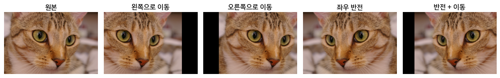
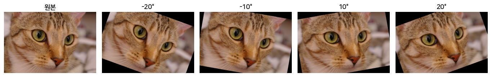
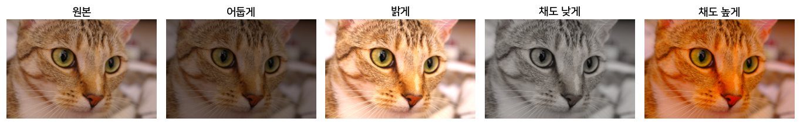
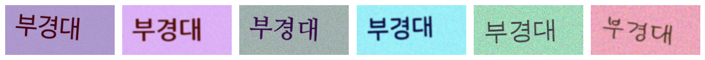
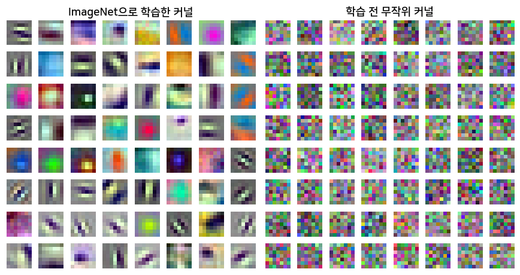

CNN의 정확도 높이기
7장에서 CNN을 쌓는 법을 배웠다. 학습을 마친 CNN의 정확도가 기대보다 낮으면 무엇을 해야 할까.
뉴럴 네트워크의 학습 전략
먼저 어디서 성능이 낮은지 본다. 질문은 두 개이고 순서가 있다.
- 학습 데이터에서부터 낮다 → 모델이 학습 데이터도 설명하지 못함 → 더 큰 규모의 아키텍처. 7장의 ResNet처럼 더 깊게 쌓는다
- 학습 데이터는 맞히는데 테스트 데이터에서 낮다 → 학습 데이터만 외운 과적합(4장) → 더 많은 데이터
데이터를 새로 모으려면 시간과 비용이 든다. 그래서 먼저 가진 데이터로 데이터를 늘린다.
데이터 증강 (Data Augmentation)
고양이 사진을 좌우로 뒤집어도 고양이다. 그러나 픽셀 값이 바뀌므로 모델에게는 새 사진이다.
위치 변경 — 좌우로 옮기거나 뒤집는다.

회전 — 일정 각도만큼 돌린다.

색 바꾸기 — 밝기, 채도, 대비를 바꾼다.

위 사진은 원본 1장에서 만든 13장이고, 정답은 모두 고양이다. 이미지의 특성을 담은 데이터가 늘어나므로 정확도가 높아질 수 있다.
증강한 이미지는 저장해 두지 않는다. 학습 중 이미지를 꺼낼 때마다 무작위로 바꾸므로 에폭마다 모델이 보는 사진이 다르다. 검증·테스트 데이터에는 증강하지 않는다. 실제로 들어올 사진 그대로 평가해야 하기 때문이다.
변형한 뒤에도 정답은 그대로여야 한다. 숫자 6을 180° 돌리면 9가 된다.
데이터 합성 (Data Synthesis)
증강은 있는 이미지를 바꾼다. 합성은 없던 이미지를 컴퓨터로 새로 만든다.
예를 들어 사진 속 글자를 읽는 OCR 모델은 글꼴, 기울기, 배경, 잡음을 조합해 만든 글자 이미지로도 학습한다. 아래 6장은 모두 컴퓨터로 만든 글자 이미지다.

사전 학습된 모델 활용 (Using Pretrained Model)
증강과 합성으로 늘려도 내 데이터는 보통 수백 장이다. ResNet-18의 파라미터는 약 1,170만 개다. 수백 장으로 이만큼을 처음부터 학습하면 과적합이 된다.
다른 길이 있다. 누군가 대량의 데이터로 이미 학습해 둔 모델을 가져와서, 내 데이터로는 이어서 조금만 학습하는 것이다.
ImageNet(사진 약 128만 장, 클래스 1,000개)으로 학습한 ResNet-18이 사전 학습 모델의 예다. 학습된 가중치가 공개되어 있어 누구나 내려받는다.
미세 조정에서 바꾸는 것: 분류부
7장의 CNN은 특성 학습부와 분류부로 나뉜다.
- 특성 학습부: 이미지에서 특성을 뽑는다. 다른 이미지에도 쓸 수 있으므로 그대로 가져온다
- 분류부: 뽑은 특성으로 클래스를 가른다. 클래스가 바뀌면 쓸 수 없으므로 교체한다
ResNet-18의 분류부는 특성 512개를 받아 클래스 1,000개의 점수를 낸다. 개미와 벌을 가르려면 512 → 2짜리 새 분류부로 바꾼다. 새 분류부의 가중치는 무작위 값에서 시작한다.
다시 학습하는 범위: Option 1, Option 2
- Option 1: 분류부만 학습한다. 특성 학습부는 동결한다
- Option 2: 모든 층을 학습한다. 1단계 값에서 출발해 학습률을 작게 두고 조금씩 조정한다. “미세” 조정이라는 이름이 여기서 나왔다
| 학습하는 층 | 학습하는 파라미터 | |
|---|---|---|
| Option 1 | 새 분류부 (512 → 2) | 512 × 2 + 2 = 1,026 |
| Option 2 | 모든 층 | 11,176,512 + 1,026 = 11,177,538 |
데이터가 적으면 Option 1을 쓴다. 1,100만 개를 수백 장으로 학습하면 과적합이 되기 때문이다. 데이터가 충분하면 Option 2로 모든 층을 내 데이터에 맞춘다.
연습 — ResNet-50의 분류부는 특성 2,048개를 받는다. 클래스 7개로 Option 1 미세 조정하면 학습하는 파라미터는 몇 개인가?
새 분류부(2,048 → 7)만 학습한다. \(2{,}048 \times 7 + 7 = 14{,}336 + 7 = \mathbf{14{,}343}\)개.
결과: 개미·벌 사진 244장
| 방법 | 검증 정확도 |
|---|---|
| 처음부터 학습 | 0.7 안팎 |
| 전이 학습, Option 1 | 약 0.93 |
| 전이 학습, Option 2 | 약 0.93 |
같은 모델, 같은 사진이다. 다른 것은 출발한 가중치뿐이다. 수백 장이면 Option 1로 충분하다.
왜 작동하는가?
특성 학습부를 그대로 가져와도 되는 이유는 무엇일까. 대량의 데이터를 학습하면서 이미지 전반에 공통된 패턴을 이미 배웠기 때문이다. 앞쪽 층은 에지를, 중간 층은 코너를, 뒤쪽 층은 곡선과 기본 형태를 잡는다.

왼쪽은 ImageNet으로 학습한 첫 층의 커널이고, 여러 방향의 줄무늬(에지)와 색 덩어리 모양이다. 오른쪽은 학습 전 무작위 값이다. 이런 패턴은 고양이에도, 개미에도, 공장 부품에도 나온다. 그래서 분류부만 새로 배우면 된다.
같은 특성을 뽑으려면 입력도 1단계와 같은 형태여야 한다. ImageNet 모델이면 \(224 \times 224\) 크기에, ImageNet 사진의 채널별 평균과 표준편차로 표준화한 사진이다.
핵심 요약
| 개념 | 핵심 내용 |
|---|---|
| 학습 전략 | 학습 데이터 성능이 낮으면 더 큰 아키텍처, 테스트 데이터 성능만 낮으면 더 많은 데이터 |
| 데이터 증강 | 위치 변경·회전·색 바꾸기. 학습 중 무작위로, 학습 데이터에만 |
| 데이터 합성 | 컴퓨터로 새 이미지를 만들어 학습 데이터에 더함 |
| 사전 학습 | 대량의 데이터로 모델을 미리 학습. 예: ImageNet 128만 장 |
| 미세 조정 | 사전 학습 모델의 분류부를 교체하고 내 소량의 데이터로 이어서 학습 |
| 전이 학습 | 사전 학습 + 미세 조정 |
| Option 1 | 분류부만 학습, 특성 학습부는 동결. ResNet-18 → 클래스 2개면 \(512 \times 2 + 2 = 1{,}026\)개 |
| Option 2 | 모든 층을 작은 학습률로 학습 |
| 왜 작동하는가 | 특성 학습부가 공통된 패턴(에지·코너·형태)을 이미 배움. 입력은 1단계와 같은 형태로 |
다음 장 예고: 이미지 분류를 넘어선 컴퓨터 비전 분야, 객체탐지와 시맨틱 분할.